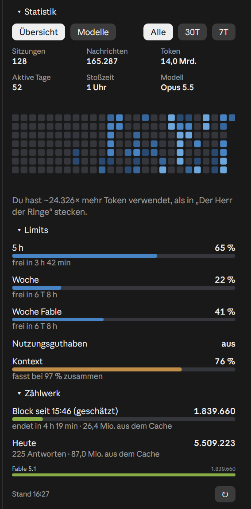
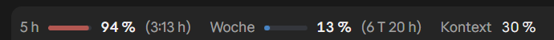
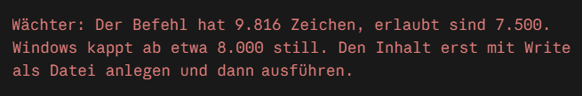
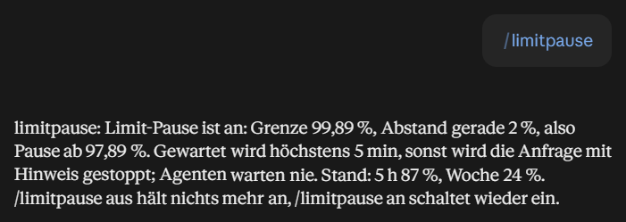
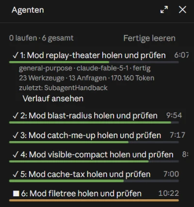

Werkstatt-Mods
Small extensions for Claude Code, built for my workshop. Each one installs with a single line, in German or English.
 The five mods
The five mods
A mod is a plugin with a piece of code that Claude Code calls when things happen: a pane beside the chat, a band above the prompt, a rule before a tool call. Mods are early access, you need Claude Code 2.1.287 or newer; I tested with the desktop app on Windows 11. All five run on your machine and send nothing anywhere.
How a mod gets to you
Open a mod and look at the picture. Then either copy the install line and type it at the Claude Code prompt, or copy the prompt and let Claude do the install. The first time, Claude Code asks whether it may add the marketplace (y), then for the settings, such as the language. From then on the mod runs in every session.
In the desktop app /plugin does not run: there, use + next to the prompt box, then Plugins, add the marketplace Dennismit2n/werkstatt-mods, then add the mod.
statistik
/statistik

A pane beside the chat: sessions, messages, tokens, active days, peak hour and model, plus a calendar of the last 26 weeks. Below that the limits (5 h, week, week per model, extra usage, context) and a counter for the current five-hour block. The numbers come from your own transcript files under ~/.claude, recomputed every minute.
Settings: language: de or en · autoOpen: open the pane at the start of every session
Install line for the Claude Code prompt
/plugin install statistik --marketplace Dennismit2n/werkstatt-modsPrompt to paste into Claude Code, Claude does the rest
werkstatt-band
/limits

One line above the prompt: 5 h, week, week per model, extra usage and context with bars and time until reset, with buttons for the two panes on the right. For your own repos also a reminder to update your site’s news file, and a text check that reports straight apostrophes and dashes.
Settings: language · reposRoot: path fragment of your repos · newsFile: path ending of the news file · toolRepos: repo folders as folder=Name · textCheck: text check on or off
Install line for the Claude Code prompt
/plugin install werkstatt-band --marketplace Dennismit2n/werkstatt-modsPrompt to paste into Claude Code, Claude does the rest
waechter
/agentenbremse

Three rules that apply to Claude itself as well: no Write may overwrite a protected file and no shell command may delete it, command lines over 7,500 characters are stopped (Windows silently cuts at 8,000), and at most two heavy subagents run at once. Every refusal says what to do instead.
Settings: language · protectedFile: path ending of the protected file · maxCommand: longest command line · heavyMax and allMax: agents at once · lightAgents: light types
Install line for the Claude Code prompt
/plugin install waechter --marketplace Dennismit2n/werkstatt-modsPrompt to paste into Claude Code, Claude does the rest
limitpause
/limitpause

Before every model request the mod checks the limits. If one would reach the threshold, the request waits right where it is until a minute after the reset and then carries on as if nothing had happened. No task ends with “limit reached” any more. /limitpause shows the state, “off” lifts the pause.
Settings: language · limitPercent: threshold in percent, default 99.89
Install line for the Claude Code prompt
/plugin install limitpause --marketplace Dennismit2n/werkstatt-modsPrompt to paste into Claude Code, Claude does the rest
flugdeck
/agenten

An “Agents” pane: every subagent with state, description, running time, bar and last tool; a click shows model, tools, requests and tokens and opens the transcript. Below that the other sessions of the desktop app, the working ones first. The pane opens by itself when the first subagent of a session starts.
Settings: language · autoOpen: open at the first subagent · showSessions: show the app’s sessions
Install line for the Claude Code prompt
/plugin install flugdeck --marketplace Dennismit2n/werkstatt-modsPrompt to paste into Claude Code, Claude does the rest
All five at once
Five lines, one after the other at the Claude Code prompt. The buttons “Statistics” and “Agents” in the band then open the two panes.
/plugin install statistik --marketplace Dennismit2n/werkstatt-mods
/plugin install werkstatt-band --marketplace Dennismit2n/werkstatt-mods
/plugin install waechter --marketplace Dennismit2n/werkstatt-mods
/plugin install limitpause --marketplace Dennismit2n/werkstatt-mods
/plugin install flugdeck --marketplace Dennismit2n/werkstatt-mods